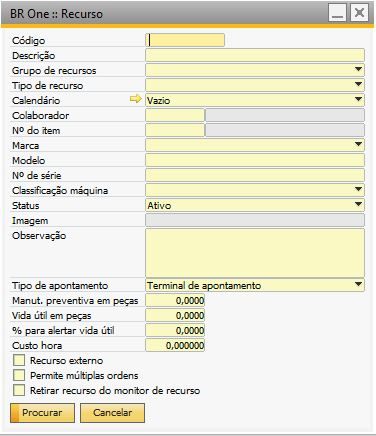
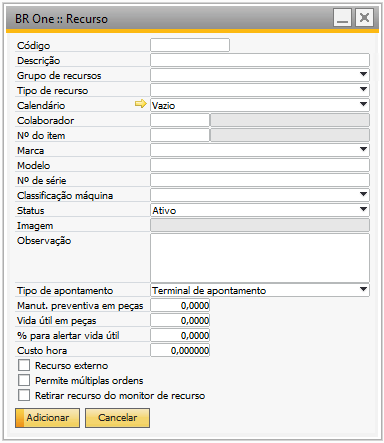
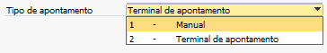
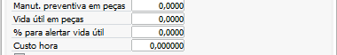
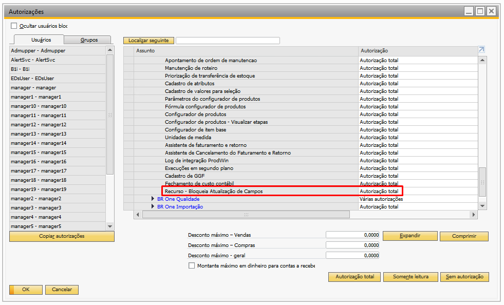
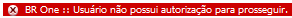

Recurso
Para acessar o cadastro de Recurso é necessário ir no menu:
Administração -> Definição -> Produção -> Recurso
{kind=link}
A tela é aberta no modo de Procurar, para adicionar deve ativar o botão Adicionar ou Ctrl+A, a tela ficará no modo de adição:
{kind=link}
Para adicionar um recurso, basta preencher os campos de código e descrição. É possível especificar um calendário, uma marca, um modelo, um nº de série, uma classificação, um status, uma imagem e um custo hora.
Se for feita a tentativa de adicionar um recurso sem informar o código, a seguinte mensagem irá aparecer:
{kind=link}
BR One :: Informe um valor para o campo “Código”.
Se for feita a tentativa de adicionar um recurso sem informar a descrição, a seguinte mensagem irá aparecer:
{kind=link}
BR One :: Informe um valor para o campo “Descrição”.
Para o grupo de recursos, o tipo é definido pelo recurso padrão. Caso seja feita a tentativa de adicionar um recurso de um tipo diferente ao tipo do grupo de recursos, a seguinte mensagem será exibida:
{kind=link}
BR One :: Um grupo de recursos deve possuir recursos do mesmo tipo.
O campo “Colaborador” fica disponível para preenchimento apenas quando o “Tipo de recurso” for de mão-de-obra, apenas os colaboradores ativos serão exibidos. Caso um colaborador que esteja no cadastro seja inativado, e o usuário tente atualizar a tela de recurso, a seguinte mensagem será exibida:
BR One :: Informe um colaborador ativo.
O campo ‘Tipo de apontamento’ define em qual tela o recurso pode ser apontado. Como padrão, vem selecionado Terminal de apontamento.
{kind=link}
Esses campos são informativos afins de gerar um alertas ou relatórios no Sistema:
{kind=link}
Se for escolhido “Manual”, o recurso só poderá ser apontado na tela “Apontamento de produção”. Se for tentado apontar recurso do tipo Terminal de apontamento nesta tela, o seguinte erro aparecerá:

BR One :: O recurso “(x) x” não permite apontamento manual.
Se for escolhido “Terminal de apontamento”, o recurso só poderá ser apontado na tela “Iniciar produção” do terminal de apontamento. A autorização “Apontamento de produção - Adicionar man. rec. tipo terminal” permite apontar recursos do tipo terminal de apontamento na tela “Apontamento de produção”.
Existem três flags na tela de recurso: “Recurso externo”, “Permite múltiplas ordens” e “Retirar recurso do monitor de recurso”.
Recurso externo:
Indica que o recurso tem origem de terceiros.
Permite múltiplas ordens:
Indica ao módulo produção que o mesmo recurso pode ser usado em várias ordens de produção ao mesmo tempo. Esse flag também é utilizado na tela “Apontamento de Produção”. Se ele estiver marcado, a validação de intervalo de tempo deve permitir poder apontar o mesmo recurso para OPs diferentes com horas sobrescritas.
Caso não esteja marcado, o apontamento será bloqueado se houver intervalo de tempo que sobrescreve outro em outra OP. Os recursos que estiverem com o status Inativo ou Manutenção não poderão ser selecionados nas telas “Alteração do Status do Recurso”, “Assistente de MRP” e na “Ordem de Produção”.
Caso o usuário queira mudar o status de um recurso ativo que esteja sendo usado em uma OP liberada, a seguinte mensagem será exibida:

BR One :: Não é permitido alterar o status do recurso pois ele está sendo usados em OPs liberadas.
Retirar recurso do monitor de recurso:
Indica que o recurso não será exibido no monitor de recurso.
Para remover um recurso, pressione o botão direito do mouse e selecione a opção “Remover”.

Caso o recurso esteja em uso, a seguinte mensagem de erro será exibida em vermelho no rodapé para o usuário:

BR One :: Registro não pode ser excluído, pois está sendo usado em algum grupo de recurso.

BR One :: Registro não pode ser excluído, pois está sendo usado em alguma OP.

BR One :: Registro em uso, não pode ser excluído, pois está sendo usado em algum apontamento de produção.

BR One :: Registro não pode ser excluído, pois o status do recurso já foi alterado.
É essencial que todos os recursos cadastrados no addon tenham um “Calendário” válido definido.
Autorização
Foi criada a autorização “Recurso - Bloqueia Atualização de Campos” com o intuito de melhorar o controle de acesso às atualizações de campos específicos dentro da tela de Recurso do BR One.
{kind=link}
O acesso a nova autorização se da através do caminho abaixo:
Tela Autorizações > Autorização do usuário > BR One Autorizações > BR One Produção > Recurso - Bloqueia Atualização de Campos
A nova autorização foi desenhada para controlar de forma específica quais campos dentro da tela de recursos podem ser atualizados pelos usuários. Com isso, ela possibilita uma gestão mais rigorosa sobre os dados que são alterados no sistema.
A autorização se divide em dois níveis de permissão
Autorização total
Sem autorização
Autorização Total
Quando o perfil do usuário está configurado com a autorização definida como “Autorização Total”, ele terá as seguintes restrições e permissões:
Permissão para atualizar apenas os campos “Status” e “Observação” na tela de recurso.
O usuário não poderá adicionar um novo recurso no sistema.
{kind=link}
Caso usuário que está configurado com a autorização definida como “Autorização Total”, tente adicionar um novo recurso, será retornado a seguinte mensagem em vermelho no rodapé:
{kind=link}
BR One :: Usuário não possui autorização para prosseguir.
Sem Autorização
Caso o usuário tenha o nível de autorização definido como “Sem autorização”, ele terá total acesso à tela de recurso, sendo permitido:
Adicionar um novo recurso no SAP.
Atualizar todos os campos presentes na tela de recurso, sem restrições.
{kind=link}